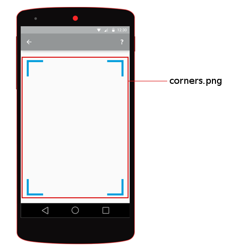
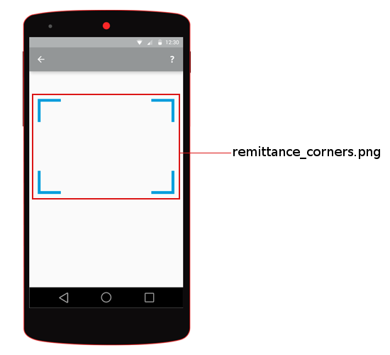
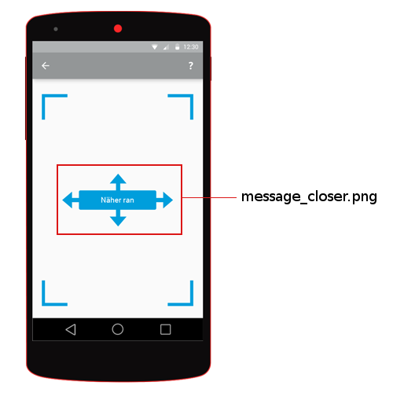
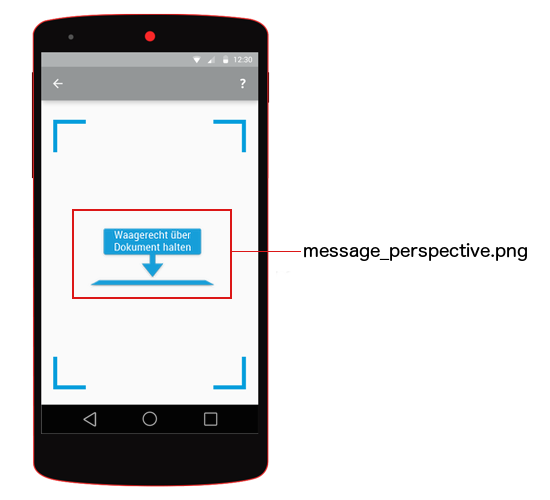
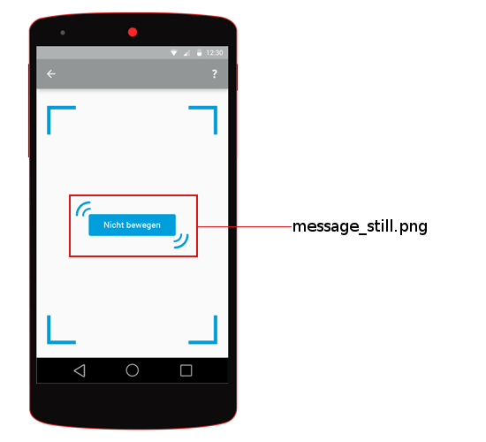
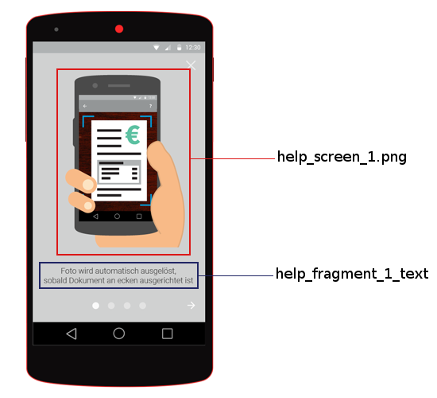
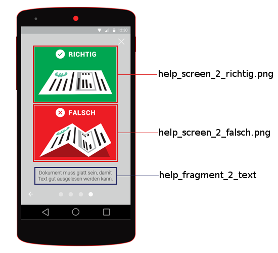
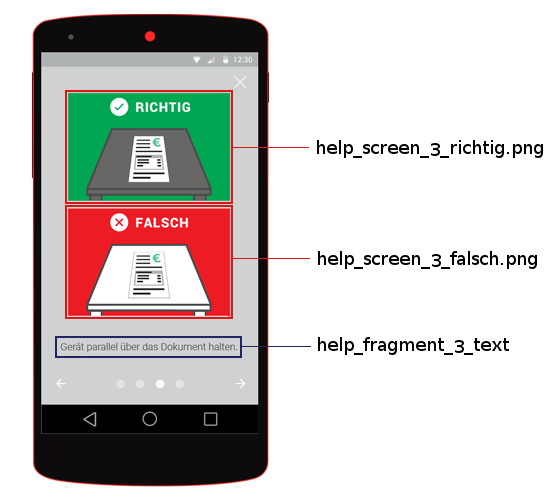
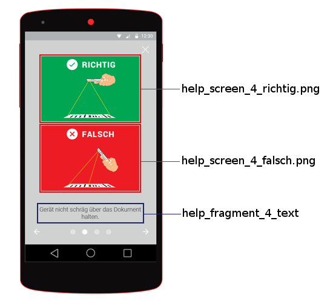
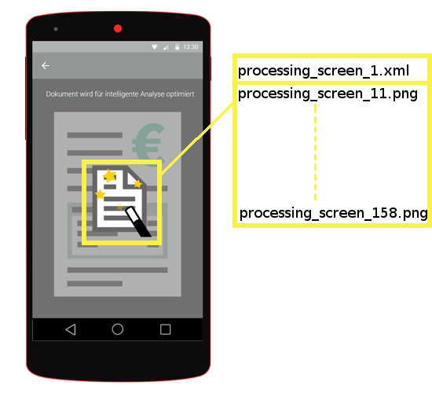

Styling the Image Capturing Screens¶
The Gini Android Vision library is built with the option to adopt the styling appropriate to the requirements of your CI. Therefore the UI ressources used by the Gini Android Vision library can be replaced or customized.
Screen Resources¶
You can replace the images used by the SDK simply by adding images with the same name to the drawables folder (and resolution dependent subfolders) of your app. The text to be displayed can be replaced by adding string resources with the same keys in the values/strings.xml file of your app. The following screen images will show which image and which text ressources are used on which screen. The color scheme is as follows: red- images, yellow- animations blue- texts.
Camera Screen¶
    Help Screen #1¶
Help Screen #2¶
Help Screen #3¶
Help Screen #4¶
Processing Screen¶
The processing screen contains an animation which is defined in drawables/processing_screen_1.xml.
List of all image files¶
- corners.png
- help_screen_1.png
- help_screen_2_falsch.png
- help_screen_2_richtig.png
- help_screen_3_falsch.png
- help_screen_3_richtig.png
- help_screen_4_falsch.png
- help_screen_4_richtig.png
- icon_action_help.png
- message_closer.png
- message_perspective.png
- message_still.png
- processing_screen_11.png
- remittance_corners.png
List of all animations¶
- processing_screen_1.xml
List of all text ressources¶
- title_activity_scanner
- title_activity_scanner_invoice
- title_activity_scanner_remittance
- title_activity_scanner_integrated_remittance
- action_settings
- net.gini.android.vision.title_activity_choice
- action_help
- title_activity_help
- action_back
- action_forward
- action_help_close
- help_fragment_title
- help_fragment_1_text
- help_fragment_2_text
- help_fragment_3_text
- help_fragment_4_text
Customizable colors¶
- net.gini.android.vision.theme.actionBar.background
- The background color of the action bar when the ScannerActivity is displayed.
- net.gini.android.vision.theme.actionBar.color
- The color of the text on the the action bar when the ScannerActivity is displayed.
- net.gini.android.vision.theme.statusBar
The color of the status bar when the ScannerActivity is displayed.
Note
Please note that this option is ignored in Android versions lower than 5.0 (Lollipop).
- net.gini.android.vision.theme.outlineColor
- The color of the document outline shown in the ScannerActivity‘s viewfinder.
- net.gini.android.vision.theme.backgroundColor
- The background color for the root views of all activities except the Help Activity.
- net.gini.android.vision.theme.helpBackgroundColor
- The background color for the HelpActivity‘s root view.
Listed below is an example file which would go into the application’s res/styles/style.xml` file.
<?xml version="1.0" encoding="utf-8"?>
<resources>
<color name="net.gini.android.vision.theme.actionBar.background">#009edc</color>
<color name="net.gini.android.vision.theme.actionBar.color">#ffffff</color>
<color name="net.gini.android.vision.theme.statusBar">#007eb0</color>
<color name="net.gini.android.vision.theme.outlineColor">#1ae2ae</color>
<color name="net.gini.android.vision.theme.backgroundColor">#ffffff</color>
<color name="net.gini.android.vision.theme.helpBackgroundColor">#ffffff</color>
</resources>
Customizable fonts¶
You can change the fonts used in several places. System and custom fonts are supported. To use a custom font place the font file in the assets/fonts directory of your project.
The following <string> resources set the fonts:
- net.gini.android.vision.theme.helpTextFont
- Sets the font used for the help texts. The system font name as used in android:fontFamily attributes or the custom font file name including extension.
- net.gini.android.vision.theme.captureHeadingFont
- Sets the font used for the heading in the CaptureActivity. The system font name as used in android:fontFamily attributes or the custom font file name including extension.
- net.gini.android.vision.theme.actionBarFont
- Sets the font used in the ActionBars. The system font name as used in android:fontFamily attributes or the custom font file name including extension.
This can be put into the same res/styles/style.xml file used for customizing the colors.
Below is an example with a system font:
<string name="net.gini.android.vision.theme.helpTextFont">sans-serif-light</string>
The following example shows how to use a custom font, called Cave-Story.ttf which was placed into the assets/fonts directory:
<string name="net.gini.android.vision.theme.helpTextFont">Cave-Story.ttf</string>
ActionBar back button¶
The ActionBar Home button can be set to act as a back button (similar to iOS). To enable it set the net.gini.android.vision.home_as_back_button boolean resource to true and create a drawable named back_button (image or XML).
In addition, if you use the standard version, you must set the back_button drawable in your styles.xml as the homeAsUpIndicator.
<style name="net.example.theme" parent="@android:style/Theme.Holo.Light">
<item name="android:homeAsUpIndicator">@drawable/back_button</item>
</style>
It is also advisable to remove the home icon from the ActionBar by setting the displayOptions for the ActionBar’s style to disableHome.
An example style configuring the homeAsUpIndicator and the displayOptions:
<style name="net.example.theme" parent="@android:style/Theme.Holo.Light">
<item name="android:actionBarStyle">@style/net.example.theme.ActionBar</item>
<item name="android:homeAsUpIndicator">@drawable/back_button</item> <!-- Not needed for compat -->
</style>
<style name="net.example.theme.ActionBar" parent="@android:style/Widget.Holo.Light.ActionBar">
<item name="android:displayOptions">disableHome</item>
</style>
Enable the back button:
<bool name="net.gini.android.vision.home_as_back_button">true</bool>
Example back_button.xml drawable which displays a png called back_icon moved 20dp to the left:
<layer-list xmlns:android="http://schemas.android.com/apk/res/android">
<item android:left="-20dp">
<bitmap android:src="@drawable/back_icon"
android:gravity="center" />
</item>
</layer-list>
Centering the ActionBar title¶
By setting the net.gini.android.vision.center_activity_title boolean resource to true the titles in the ActionBars will be centered. A custom view is used to accomplish this with a layout named action_bar_center_title.xml. You can create your own layout if you need to fine tune the positioning of the title. The only requirement is that it contains a TextView with the id title_centered.
Enable the title centering:
<bool name="net.gini.android.vision.center_activity_title">true</bool>
Custom action_bar_center_title.xml layout that moves the title 24dp to the left:
<RelativeLayout xmlns:android="http://schemas.android.com/apk/res/android"
android:layout_width="match_parent"
android:layout_height="match_parent"
android:orientation="vertical"
android:clipChildren="false">
<TextView
android:paddingLeft="-24dp"
android:id="@+id/title_centered"
android:layout_width="wrap_content"
android:layout_height="wrap_content"
android:layout_centerInParent="true"
android:textColor="@color/net.gini.android.vision.theme.actionBar.color"/> <!-- Using the color from the theme -->
</RelativeLayout>
Dot page indicator in the help¶
By setting the net.gini.android.vision.help_dot_page_indicator boolean resource to true the dot page indicator can be enabled which replaces the text page indicators.
You can configure the bottom margin, the padding between the dots and the width/height of the dots with the following dimension resources:
<dimen name="net.gini.android.vision.theme.help_page_indicators_bottom_margin">15dp</dimen>
<dimen name="net.gini.android.vision.theme.help_page_indicator_padding">8dp</dimen>
<dimen name="net.gini.android.vision.theme.help_page_indicator_width">6dp</dimen>
<dimen name="net.gini.android.vision.theme.help_page_indicator_height">6dp</dimen>
The default and active dot colors can be configured with the following color resources:
<color name="net.gini.android.vision.theme.help_page_indicator_color_default">#999999</color>
<color name="net.gini.android.vision.theme.help_page_indicator_color_active">#000000</color>
Customizable Dimensions¶
- action_bar_title_size
- Size of the action bar’s title. Used only if a custom font is also set for the action bar’s title.
- document_outline_width
- Width of the document outline in the ScannerActivity’s camera viewfinder.
- help_text_size
- Size of the help text font.
- help_pager_title_strip_font_size
- Size of the title strip text in the HelpActivity.
- capture_heading_text_size
- Size of the heading text in the CaptureActivity.
Listed below is an example file which would go into the application’s res/values/dimens.xml` file.
<dimen name="help_text_size">20sp</dimen>
<dimen name="help_pager_title_strip_font_size">16sp</dimen>
<dimen name="capture_heading_text_size">22sp</dimen>
<dimen name="action_bar_title_size">18sp</dimen>
<dimen name="document_outline_width">2dp</dimen>
Debug Options¶
Enabling the framemeter¶
The framemeter is displayed on the upper right corner of the scanner activity and displays how long it takes to process one camera frame. The lower the number, the faster Gini can process images on the device. Which basically means that lower numbers are better.
<integer name="net.gini.android.vision.show_processing_average">0</integer>
The value is an integer describing the framemeter’s visibility as described in the android documentation. Usually you will use 0 while debugging or testing and 2 in release builds.